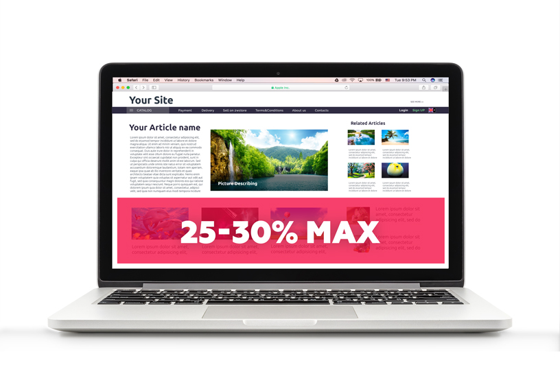
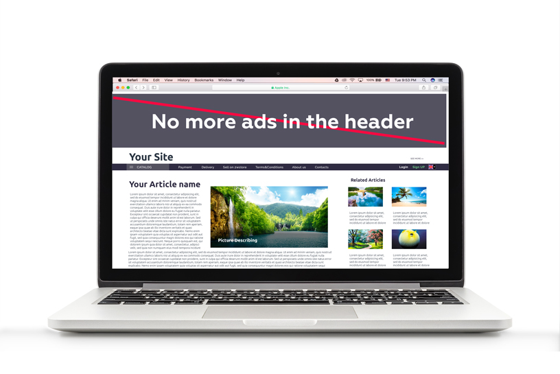
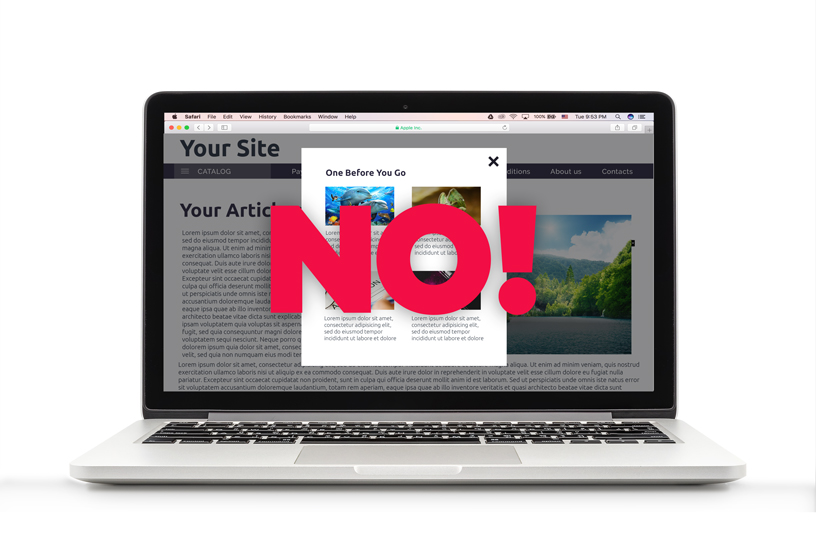
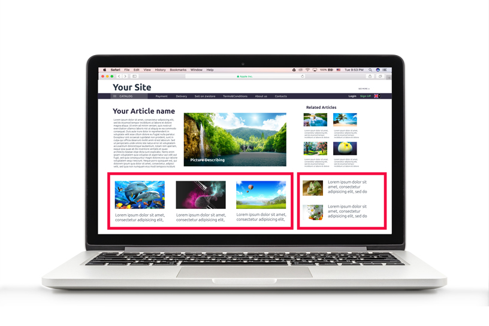

7 ways to stop Facebook cutting your traffic
Attention! New Facebook standards can reduce your traffic dramatically or even zero it out. That’s why we’d like to share with you some hacks that would help you to prevent it. Let’s look into each one of them:
- Try not to occupy more than 25 – 30% of the first screen with ads
This requirement is very reasonable because when a visitor looks at your page for the first time it has to make a good impression and give him a chance to interact with the page content. So, if you occupy more than 30% of the first screen with the ads it’d be perceived as over spammed by visitors and facebook system itself.

- Clean your page from any inappropriate or misleading content
Not long ago it was very popular to post some shocking and provocative content to attract attention. But this tactic doesn’t work anymore. People avoid this kind of sites which affects the ranking dramatically. This also applies to false information that misleads your readers. So, if you don’t want to lose your audience and attempt to get back the traffic from facebook you need to delete any kind of offensive or shocking content from your website.
- No more ads in the header
Now, let’s talk about the proper placement of the ads. It seems tempting to place a big ad widget right into the header of your website. But, the latest stats show that this method is a big mistake because people are very irritated to see the ad right away and leave the page without even trying to find what they were looking for.

- Unique and relevant content is the key
Have you ever tried to estimate the value and the relevance of your content? If not, now is the right time. From now on this factor is evaluated not only by search engines but by facebook system, too. So, try to place unique texts and pictures relevant to the topic of your blog or site. There’re a lot of resources that could help you check the texts for uniqueness and other factors. Talking about pictures: avoid copying photos, screenshots, other brands logos. And don’t forget to name the pictures properly.
- Oversaturating your site with ads and pop-ups will lead to its blocking
Even a casual glance at the stats of visits shows that people are highly irritated with all the forms of pop-ups and ads overlaying each other. And in most cases the bounce rate is much higher than the amount of clicks earned this way.

- Two native ad widgets is enough
Try to place an adequate amount of widgets on the site so that it doesn’t look oversaturated. Our recommendation is to place one widget in the article and one in the sidebar (but only if you have your own content to match it with).

- Well-written texts with correct grammar would be an advantage
Try to be reasonable about what you’re writing so the readers of your blog could clearly understand what you mean and what’s your main message. Also, don’t forget about grammar, correct punctuation and language. This may not seem very important to many publishers. But this affects not only the loyalty of your readers but also facebook and seo ranking of the site today.
Lots of publishers suffered from the new facebook rules and lost most of their traffic. So, if you’re one of them or want to avoid their mistakes just follow these tips. And then you’ll get a chance to restore your earnings through website monetization in full.